- 00 开篇词 数学，编程能力的营养根基.md.html
- 01 从计数开始，程序员必知必会的数制转换法.md.html
- 02 逻辑与沟通，怎样才能讲出有逻辑的话？.md.html
- 03 用数学决策，如何规划好投入、转化和产出？.md.html
- 04 万物可数学，经典公式是如何在生活中应用的？.md.html
- 05 求极值：如何找到复杂业务的最优解？.md.html
- 06 向量及其导数：计算机如何完成对海量高维度数据计算？.md.html
- 07 线性回归：如何在离散点中寻找数据规律？.md.html
- 08 加乘法则：如何计算复杂事件发生的概率？.md.html
- 09 似然估计：如何利用 MLE 对参数进行估计？.md.html
- 10 信息熵：事件的不确定性如何计算？.md.html
- 11 灰度实验：如何设计灰度实验并计算实验的收益？.md.html
- 12 统计学方法：如何证明灰度实验效果不是偶然得到的？.md.html
- 13 复杂度：如何利用数学推导对程序进行优化？.md.html
- 14 程序的循环：如何利用数学归纳法进行程序开发？.md.html
- 15 递归：如何计算汉诺塔问题的移动步数？.md.html
- 16 二分法：如何利用指数爆炸优化程序？.md.html
- 17 动态规划：如何利用最优子结构解决问题？.md.html
- 18 AI 入门：利用 3 个公式搭建最简 AI 框架.md.html
- 19 逻辑回归：如何让计算机做出二值化决策？.md.html
- 20 决策树：如何对 NP 难复杂问题进行启发式求解？.md.html
- 21 神经网络与深度学习：计算机是如何理解图像、文本和语音的？.md.html
- 22 面试中那些坑了无数人的算法题.md.html
- 23 站在生活的十字路口，如何用数学抉择？.md.html
- 24 结束语 数学底子好，学啥都快.md.html
21 神经网络与深度学习：计算机是如何理解图像、文本和语音的？
在上一讲的最后，我们提到过“浅层模型”和“深层模型”。其实，人工智能的早期并没有“浅层模型”的概念，浅层模型是深度学习出现之后，与之对应而形成的概念。在浅层模型向深层模型转变的过程中，神经网络算法无疑是个催化剂，并在此基础上诞生了深度学习。
这一讲，我们就来学习一下神经网络和深度学习。
神经网络的基本结构及其表达式
回想一下上一讲我们学的决策树，理论上来看，只要一直递归，一层又一层地寻找分裂变量，决策树做出预测的准确率是可以达到 100% 的。可见，这种层次化建立模型的思想，是不断提高模型效果的重要手段。
然而，对于决策树而言，AI 框架的第一个公式 y = f(w;x)，只能被“画出”却很难用被写出。而这背后的原因，其实是决策树是一种类似于“if-else-”的条件分支结构，这本身就不是一种基于函数的数学表达形式。
那么我们不禁会想，有没有哪个模型既能保留层次化建模提高效果的优势，又能拥有基于函数的数学表达形式呢？
答案，就是神经网络。
神经网络是一种具有层次化结构的模型，它的设计来自生物学中对于人类大脑的研究。我们知道，神经元是人脑的基本结构，众多神经元组织在一起，就构成了人的大脑。
1.神经元，神经网络的基本单位
神经网络的结构与人类大脑结构非常相似，它的基本单位是函数化的神经元，再通过层次化地把这些神经元组织在一起，就构成了神经网络的表达式。
如下图，就是神经网络的神经元。
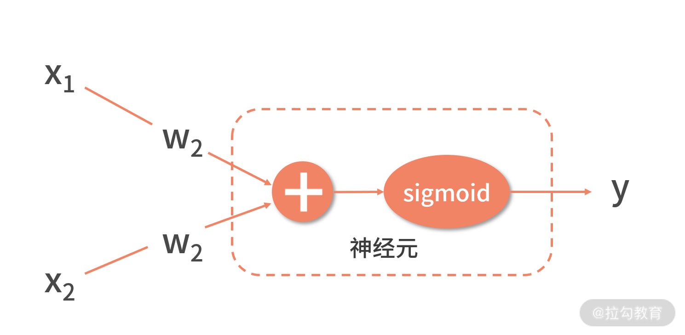
我们假设输入变量有两个。
实际中如果输入变量较多，只需要增加输入变量 xi 和权重系数 wi 的链接就可以了。
图中，x1 和 x2 是两个输入变量，它们分别与两个系数变量 w1 和 w2 相乘之后，指向了“+”号的模块。
得到了加权求和的结果之后，需要输入到一个 Sigmoid 函数中，最右的 y 就是这个神经元的输出，即
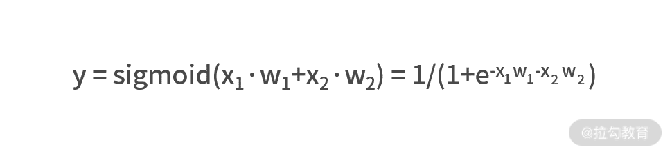
有了神经元的表达式之后，我们把图中虚线框的神经元用一个圆形的结点来进行封装，再把输出 y 写入这个结点中，这样就有了下面的表示形式。
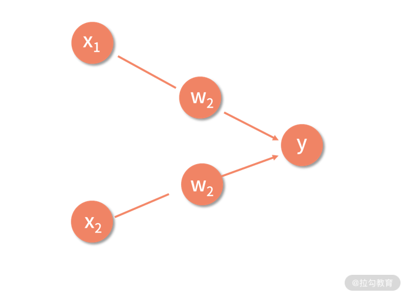
2.层次化将“神经元”构成神经网络
我们说过，层次化地把多个神经元组织在一起，才构成了神经网络。在这里，层次化的含义是，每一层有若干个神经元结点，层与层之间通过带权重的边互相连接。如下图，就是一个简单的神经网络。
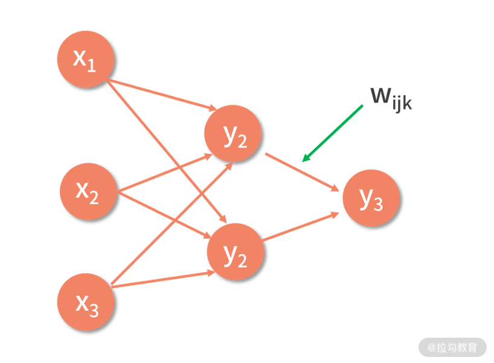
在这个神经网络中，输入变量有 3 个，分别是 x1、x2 和 x3。结点与结点之间，由带箭头的边连接，每条边都是一个权重系数 wijk。作用是将前面一个结点的输出，乘以权重系数后，输入给后面一个结点中。
这里 wijk 的含义，是第 i 层的第 j 个结点到第 i+1 层的第 k 个结点的权重。
网络中，除了最后一个结点以外，其余结点的输出都是临时结果；且每个临时结果，都将成为下一层神经元结点的输入。而最后一个结点的输出，也就是最终模型的输出 y。
对于神经网络而言，它既可以用图画的方式“画出”模型的结构，也可以通过函数化的形式写出输入和输出的关系，上图中的表达式如下。
y = y3 = sigmoid(y1w211+y2w221)
y1 = sigmoid(x1w111+x2w121+x3w131)
y2 = sigmoid(x1w112+x2w122+x3w132)
我们将 y1 和 y2 代入 y3，则有
y = sigmoid[sigmoid(x1w111+x2w121+x3w131) ·w211 + sigmoid(x1w112+x2w122+x3w132)·w221]
虽然，神经网络模型可以用函数来写出输入输出关系的表达式，但由于网络结构本身的复杂性导致这个表达式并不好看。而且随着网络层数变多、每一层结点数变多，这个表达式会变得越来越复杂。
在实际应用中，根据需要神经网络可以有任意多个层次，每层里可以有任意多个神经元，这通常是由开发者自己根据问题的复杂程度而预先设置的。
神经网络的损失函数
有了神经网络的表达式之后，我们就继续用 AI 框架的第二个公式，去写出它的损失函数。神经网络的损失函数并没有什么特殊性，在绝大多数场景下，都会选择最小二乘的平方误差作为损失函数。
这一点，与线性回归是一致的。
最小二乘损失函数计算方式，是所有样本真实值 ŷ 与预测值 y 之间差值的平方和，则有：
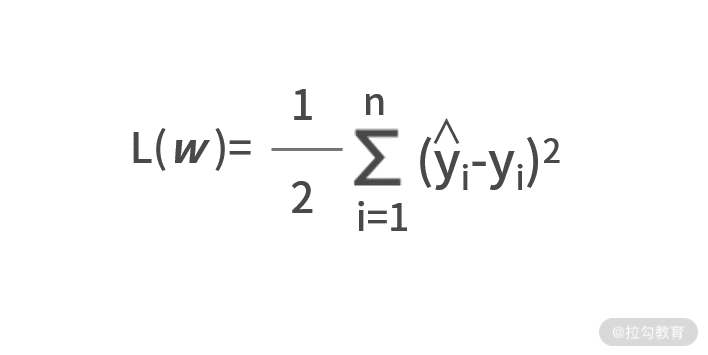
其中 n 代表的是所有的样本数。在这个损失函数中还有一个 1/2 的系数，增加一个系数会影响损失函数 L(w) 的值，但并不会影响最优系数的取值。
例如，y = 2x2+4和 y=x2+2 取得极值都是在 x=0 的点，之所以增加这个系数，是为了抵消后面平方项求导而产生的 2 倍的系数。
随机梯度下降法求解神经网络参数
最后，我们利用 AI 框架的第三个公式w*= argmin L(w)，来求解神经网络。在神经网络中，w系数就是所有的 wijk。
我们把到现在为止的所有已知条件进行整理
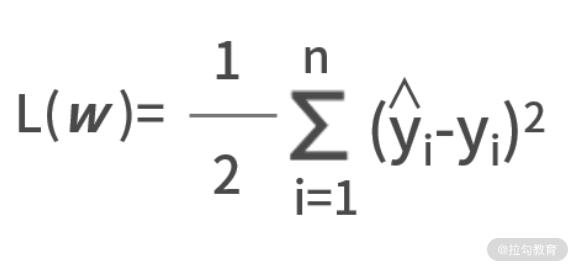
y = sigmoid[sigmoid(x1w111+x2w121+x3w131)·w211+sigmoid(x1w112+x2w122+x3w132)·
w221]
其中，对于某个给定的数据集而言，xi 和 ŷi 都是已知的。也就是说，我们要求解出让上面损失函数 L(w) 取得极小值的 wijk 的值，我们可以考虑用先前学的随机梯度下降法来进行求解。
在使用随机梯度下降法的时候，只会随机选择一个样本（假设标记为 m）进行梯度下降的优化。因此，损失函数的大型求和符号就可以消灭掉了，即
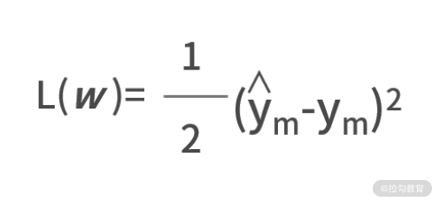
ym=sigmoid[sigmoid(xm1w111+xm2w121+xm3w131)·w211+sigmoid(xm1w112+xm2w122+xm3w132)·w221]
在这个例子中，我们有 8 个 wijk 变量，分别是 w111、w121、w131、w211、w112、w122、w132、w221，因此需要求分别计算损失函数关于这 8 个变量的导数。
既然表达式都有了，我们就利用大学数学求导的链式法则，耐着性子来求解一下吧。
别忘了，y=sigmoid(x) 的一阶导数是 y·(1-y)。
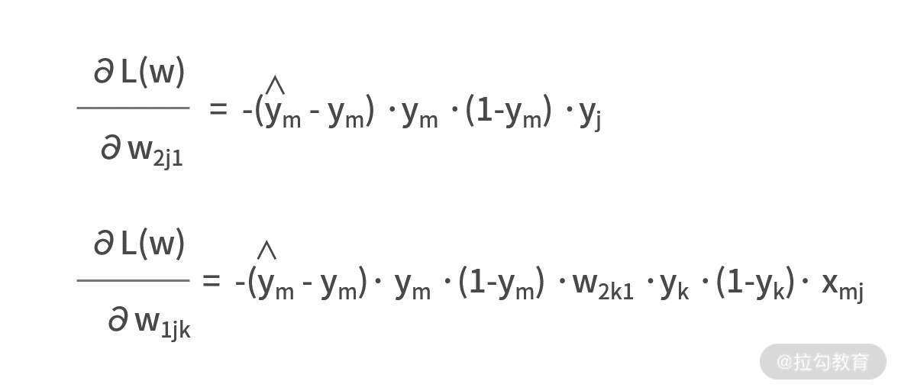
有了梯度之后，就可以设置学习率，再利用随机梯度下降法求解最优参数了。
神经网络建模案例
利用下面的数据集，建立一个神经网络。这个数据集中，每一行是一个样本，每一列一个变量，最后一列是真实值标签。
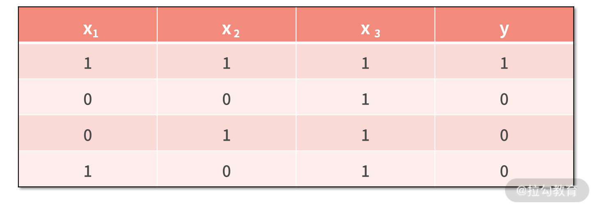
在利用神经网络建模时，需要预先设计网络结构。也就是说，你计划采用几层的网络，每一层准备设置多少个神经元结点。
我们看到，每个样本包含了 3 个输入变量。那么，我们可以直接采用上面推倒过的网络结构，即神经网络的结构如下所示。
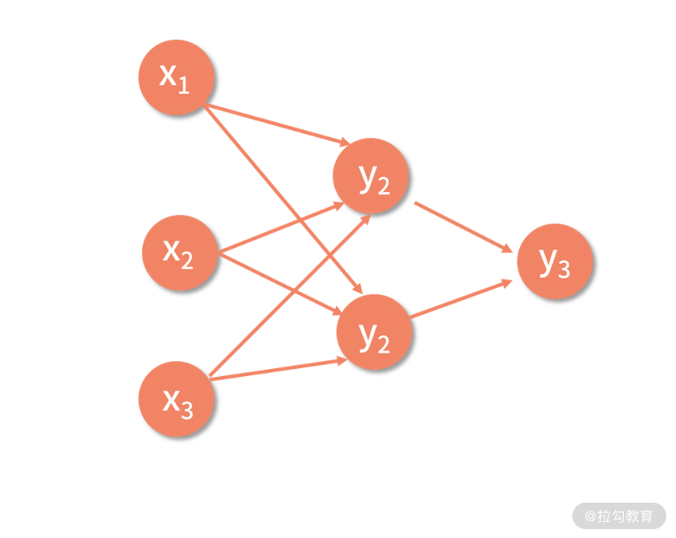
同时，我们也已经推导出了损失函数关于每个链接权重边的梯度，即
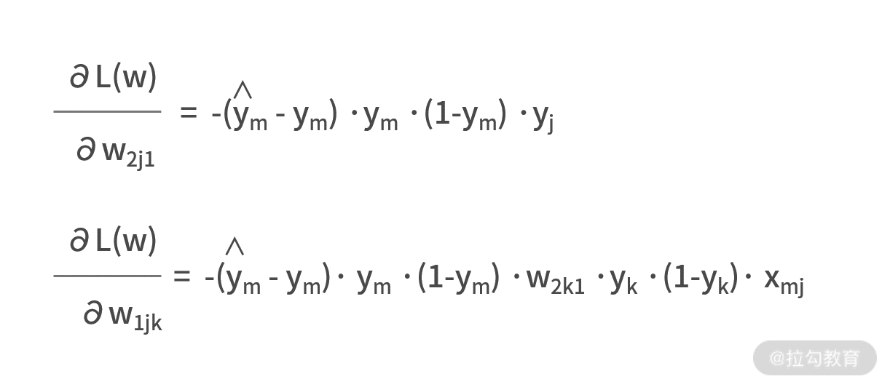
由于神经网络的代码量比较多，而且有非常多的开源工具可以使用。因此，我们这里给出伪代码，来展示其核心思想。
#获取数据集x和y
x,y = getData()
#随机初始化参数w
w = init()
#设置学习率
a = 1.0
#随机梯度下降法
for _ in range(1000):
index = random.randint()
y1,y2,y3 = getResult(x,w)
g = getGrad(x,y,w)
w = w - a*g
我们对代码进行解读：
- 第 2 行，读取数据集，并保存在变量 x 和 y 中，可以考虑用 Numpy 的 array 进行保存；
- 第 5 行，随机初始化参数向量 w，因为神经网络是多层、多结点的结构，所以可以考虑用个三维数组进行保存；
- 第 8 行，设置学习率，与以前的结论一样，如果迭代轮数够多，学习率可以考虑设置小一些；
- 第 11 行开始，进行随机梯度下降法的迭代。
- 第 12 行，调用随机函数，随机获取一个数据样本。
- 第 13 行，根据网络结构，计算 y1、y2、y3 每个结点的输出，其中还需要多次调用 Sigmoid 函数，可以考虑把 Sigmoid 的计算单独函数化；
- 第 14 行，根据梯度公式计算梯度值，并保存在 g 变量中，g 和 w 应该设置一样的数据类型；
- 第 15 行，利用梯度下降法进行参数更新。
在实际工作中，如果你需要建立神经网络的模型，除了上面自己开发代码的方式外，还可以考虑使用 Tensorflow 或者 Keras 等开源的人工神经网络库。
因为这只是实现的工具，原理上并没有什么差异，故而我们不再深入展开讨论。
神经网络和深度学习
深度学习通常指训练大型深度的神经网络的过程。
- 与传统的神经网络模型相比，深度学习模型在结构上与之非常相似；
- 不同的是，深度学习模型的“深度”更大，“深度”的体现就是神经网络层数多，神经网络每一层的结点数多。
下面，我们简单介绍两种深度神经网络——卷积神经网络和循环神经网络，以及它们分别在图像处理、文本处理和语音处理上的效果。
1.卷积神经网络（CNN）
与普通神经网络相比，卷积神经网络引入了“卷积”和“池化”两个操作，下面通过详细的例子，讲解卷积神经网络在图像处理的主要思路。
彩色图像由红、绿、蓝三原色组成，每种原色按照深浅可以表示为 0 到 255 间的一个数字。因此，对于图像中的每个像素（图像中不可分割的最小单位），都可以写出其相应的红、绿、蓝数值。
所以在计算机中，一幅彩色图像可由红、绿、蓝三个颜色的像素矩阵表示出来，下图给出了一幅 128×128 像素图像的矩阵表示：
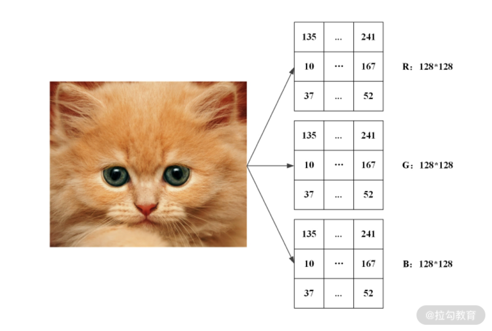
- “卷积”操作的思想 采用一个较小的卷积核，例如 3×3 的矩阵，来对图像特征进行局部的提取。这样做可以增加参数的共享，减少随着神经网络变深、结点数变多而带来的巨大计算量。
- “池化”操作的思想 采用一种过滤的方法，去除冗余信息并且加快计算。池化可以将一个 4×4 的图像切割成 4 个 2×2 的小矩阵，在每个小矩阵中取最大值，所得结果形成一个新矩阵。这种操作，可以减少神经网络结点的个数，加快计算速度。
在卷积神经网络中，通常某一个层都是在做卷积处理，某一层都是在做池化处理。一般，它们都是在层次之间交替进行的。经过多层卷积、池化操作后，所得特征图的分辨率远小于输入图像的分辨率，减少了计算量，加快了计算速度。
通过卷积和池化两项操作，卷积神经网络能在准确提取图像特征的同时，提升运算效率，因此在图像处理中取得了良好效果。
2.循环神经网络（RNN）
循环神经网络是一种善于处理序列信息的神经网络，在语音、文本处理方面有着非常大的优势。因为人类的自然语言属于一种时序信息，它有着明显的顺序关系，这就让以循环神经网络结构为基础的深度神经网络有其发挥空间。
除此之外，循环神经网络在引入 LSTM（Long Short-TermMemory）结构后，在对有用时序信息的“记忆”和没用时序信息的“忘记”上有着强大的处理能力。
下图给出了一个 LSTM 的神经元结构。
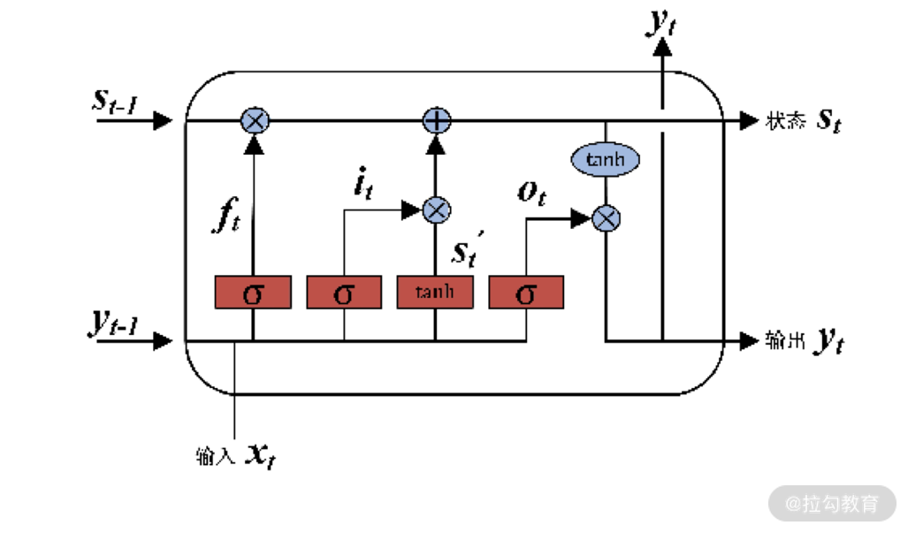
可以发现，LSTM 的网络结构和神经元结构已经非常复杂了，但它仍然保持着神经网络的那些特性。尤其是结构可被“画出”，输入、输出之间可以用函数表达。有了这些基本条件后，就仍然可以用损失函数和随机梯度下降法，来求解网络结构的参数。
小结
这一讲，我们学习了神经网络和深度学习。在当前的 AI 时代下，深度学习模型在效果方面打败了传统的浅层模型。而深度学习的基本原理都主要来自神经网络，神经网络结构可被“画出”，输入、输出之间可以用函数表达，这些特点都是支持它深度化的前提。
神经网络之所以能取得很好的效果，主要是因为网络结构的多样性。计算机在面对语音、图像、文本的不同问题时，主要是通过对网络结构进行优化迭代，设计出 CNN、RNN 的新型神经网络结构的。
此外，神经网络的损失函数和参数求解，仍然和其他浅层模型相似，并没有什么特别。
最后，我们给大家留一个练习题。假设有一个 4 层的神经网络，第一层是输入 xi，最后一层是输出 y。4 层的结点数分别是 3、2、2、1。试着去求解一下损失函数关于每个链接权重的梯度吧。